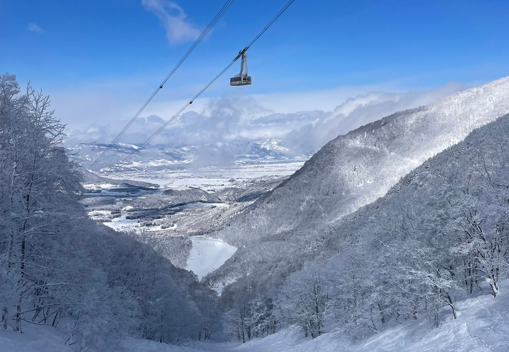
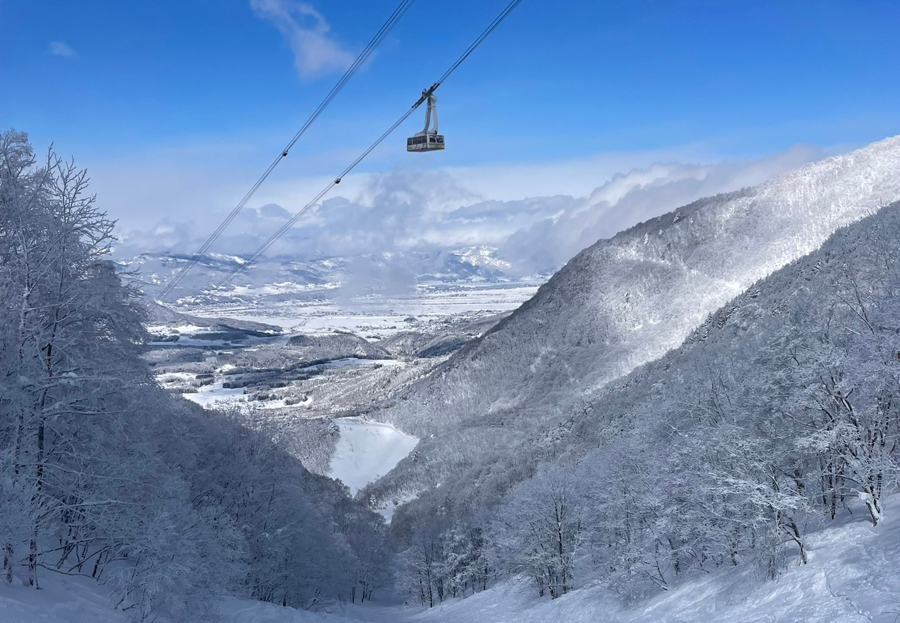

活動内容
普段の活動
週1回 昼休み（山行計画・安全講習）
登山企画の反省や安全講習などを実施します。履修状況に合わせて半期に1回曜日が変わります。
対面参加が基本ですが、zoomでも参加可能です。
週2回 1限または5限（各自の都合に合わせて）
迎賓館周りのランニングや筋トレを実施しています。
自分の空いている曜日に参加できるので、授業やバイトとの両立もできます！
月1〜2回（泊り・日帰りメイン）
授業期間は毎週末の登山企画に参加します。長期休みはノルマを達成すれば自由に企画に参加できます！
年間予定
最新の情報はSNSまたは説明会でご確認ください。
新歓山行
登山体験会を通して登山の楽しさを実感してもらいます
机上講習・新歓合宿
登山知識の講習や初めての宿泊形式での合宿を行います。
強化プレ山行
夏の大縦走に向けて体力・技術の向上を目指します
強化山行、上南戦
強化プレよりレベルアップ。他大学との交流戦（上南戦）も盛り上がります。
夏休み企画、大縦走、夏期講習
日本アルプスを数日間かけて登ります。学年ごとの企画や縦走もあるかも？
夏休み企画、大縦走、富士登山
夏の締めくくり。達成感と共に一生モノの思い出が作れます。
10月山行、OB山行
OB・OGの先輩方との交流や、秋からの新入部員向け山行を行います。
11月山行
紅葉シーズン。都心から近い山々へ、景色を楽しみながら登ります。
12月山行、冬期講習、雪上訓練(任意)
冬装備の使い方や歩き方を基礎から学びます。
休み
雪山登山(任意)、スキースノーシュー、サイクリング
スキーや自転車など、幅広いアウトドア活動で冬を満喫します。
離島遠征、屋久島縦断
1年の締め。屋久島や伊豆諸島など、遠方の山へ遠征します。
その他の活動
普通の登山以外にも楽しみは盛り沢山！！
サイクリング・離島遠征・スキー企画

 

特に春休み(2,3,4月)には自由度の高い企画を堪能できます！
■サイクリング：しまなみ海道など
■離島遠征：屋久島、奄美大島、小笠原諸島、利尻島など
■スキースノボ：かぐらスキー場、宝台樹ヒュッテなど
研究会
部内に研究会があり、希望者は入会して技術を高めることができます！
登山経験が豊富なコーチの方が指導してくださるので、未経験でも問題ありません！
雪山登山、ボルダリング、沢登りなどを楽しめます